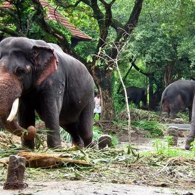
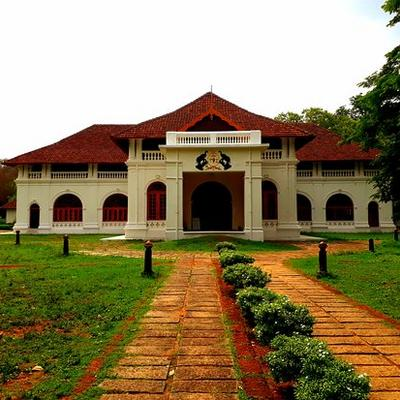
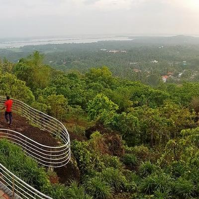

Punnathur Kotta

Not so far away from the Guruvayoor Temple lies one of the best Thrissur tourist places. An Elephant Sanctuary, the Punnathur Kotta was initially a palace belonging to a local ruler. It was then converted to a house of elephants and now has the highest number captive elephant, about 59 of them.
This is where these beasts are trained to participate in several festivals. Apart from this, the Punnathur Kotta also has a training centre for Elephant Riders (Mahouts), and temples dedicated to Lord Shiva and Bhagavati.
Shakthan Thampuran Palace

Built after a rather Dutch style architecture, the Shakthan Thampuran Palace is a sight to behold. Finding its name in almost every list of Thrissur tourist places, the Shakthan Thampuran Palace was rebuilt in the place of Vadakkekara Palace in the year 1795 by the then King Ramavarma Thampuram of Cochin.
Vilangan Kunnu

The oxygen jar of the city of Thrissur, Vilangan Kunnu is a hillock located near the city. From its top, one can get a fine view of the Thrissur city and Thrissur Kole Wetlands, making the place one of the most favourite picnic spots in the region.
Simply surreal, the experience from the 5-acre hilltop is only enhanced by the construction of an amusement park, where there are a number of rides that the kids can enjoy with the amazing view below.